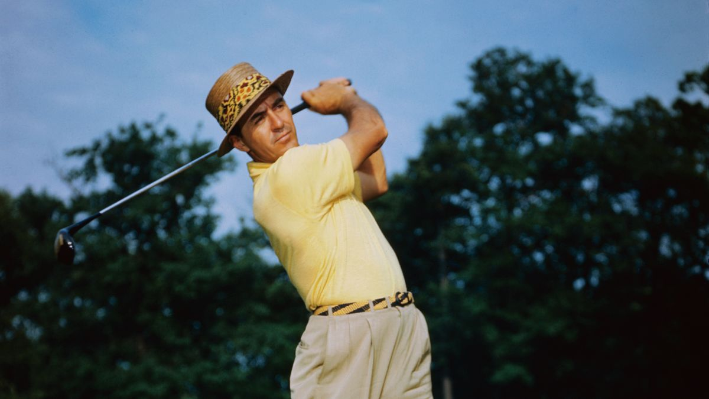

Golf is een sport waarbij je probeert een kleine bal met zo min mogelijk slagen in een hole te krijgen. Dit doe je op een golfbaan die vaak bestaat uit 18 holes, elk met hun eigen uitdagingen zoals zandbunkers, vijvers en ruw gras.
Met verschillende clubs – zoals een driver voor lange afstanden en een putter voor korte slagen – combineer je
techniek, concentratie en strategie.
Golf vindt zijn oorsprong in Schotland in de 15e eeuw en is sindsdien
uitgegroeid tot een wereldwijde sport met beroemde toernooien, zoals The Masters.
Golf is geschikt voor iedereen: jong of oud, beginner of professional. Het biedt niet alleen sportieve uitdaging, maar ook rust en plezier in de natuur.
Lees meer op Sam Snead's wikipedia.
